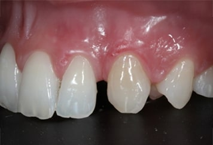
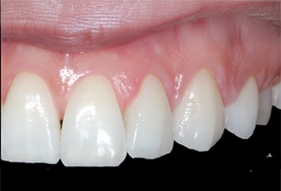

שיקום פה מלא
שיקום נרחב במצבים מורכבים, לשיפור התפקוד, הנוחות והמראה.
עם למעלה מ־15 שנות ניסיון, ד״ר תחסין יונס מטפל במקרים מורכבים בתחומי שיקום על גבי שתלים, טיפולי חניכיים, כתרים וציפויים אסתטיים.
5.0 ב־MedReviews · חוות דעת מאומתות
תוכנית הטיפול נבנית לפי מצב הפה, הצרכים והמטרות שלכם.
שיקום נרחב במצבים מורכבים, לשיפור התפקוד, הנוחות והמראה.
מלווים אתכם בהסבר, במעקב ובתמיכה לאורך ההשתלה והשיקום.
שיקום שיניים פגועות או חסרות, לתפקוד ולמראה טבעי.
שינוי הצורה, הצבע והפרופורציות של החיוך בהתאמה אישית.

מצב התחלתי: מחלת חניכיים ושיניים חסרות וניידות, לצד כתרים ישנים וקו חיוך לא אחיד.
הטיפול: לאחר תכנון דיגיטלי בוצעו עקירות ושיקום פה מלא על גבי שתלים, לשיפור התפקוד והמראה.


מצב התחלתי: מרווחים בין השיניים ושיניים מסובבות.
הטיפול: ציפויים בהתאמה אישית, תוך הכנה מינימלית של השיניים.


מצב התחלתי: מחלת חניכיים, ניידות שיניים וגשר ישן שלא התאים לתפקוד ולמראה.
הטיפול: לאחר טיפול חניכיים והשתלות מונחות מחשב, הוחלף הגשר בגשר זירקוניה.
התוצאות משתנות ממטופל למטופל. התאמת הטיפול נקבעת לאחר בדיקה ואבחון אישי.

הדרכת סטודנטים בהדסה ובאוניברסיטת טורונטו בקנדה, ומתמחים בשיקום הפה ברמב״ם.
תואר שני מחקרי · הצטיינות דיקן · פרסומים, פרסים ומענקי מחקר
שלוש שנות התנדבות ברפואת שיניים ביד שרה.
בעל תואר DMD ו־MSc במדעים ביו־רפואיים, ובוגר תוכנית ההתמחות בשיקום הפה באוניברסיטה העברית–הדסה. עבד במרכז להשתלות דנטליות בהדסה ובמחלקת שיקום פנים ולסתות ברמב״ם, שם גם הדריך מתמחים בשיקום הפה. בנוסף, הדריך סטודנטים בהדסה ובאוניברסיטת טורונטו בקנדה. לצד עבודתו הקלינית פרסם מאמרים מדעיים וקיבל הצטיינות דיקן ומענק Cabakoff. הוא זכה בתחרות Hatton של החטיבה הישראלית למחקר דנטלי, וייצג אותה בתחרות העולמית במסגרת כנס IADR בסן פרנסיסקו, ארה״ב.
חוות דעת של מטופלים שעברו טיפולי שיקום, שתלים, כתרים וטיפולים אסתטיים אצל ד״ר תחסין יונס.
„התוצאות מצוינות. ד״ר יונס מקצועי, סבלני ומעניק יחס אישי שמשרה תחושת ביטחון מלאה.”
„טיפול מקצועי, עברתי טיפול של שתלים וכתרים. הכל מצויין. ממליצה מאוד.”
„רופא מדהים, עשיתי השלמת שן, נראה טבעי, טיפול מקצועי. רופא אכפתי ואנושי. מאוד ממליץ.”
החליקו לצדדים לחוות דעת נוספות
ארבעה שלבים — מהבדיקה ועד המעקב
נקשיב לכם, נבדוק את השיניים, החניכיים והסגר וניעזר בצילומים ובסריקה לפי הצורך.
תבינו את האפשרויות, סדר השלבים ומשך הטיפול הצפוי לפני שמתחילים.
כל שלב מוסבר מראש ומבוצע בקצב מותאם, תוך דגש על נוחות לאורך הטיפול.
ביקורות והנחיות אישיות לשמירה על התוצאה לאורך זמן.
בכל שלב תדעו מה נעשה, למה ומה צפוי בהמשך.
רוב הטיפולים מבוצעים תחת אלחוש מקומי, בקצב המותאם למטופל ותוך בדיקת הנוחות לאורך הטיפול. לאחר טיפולים מסוימים תיתכן רגישות או אי־נוחות זמנית, ותקבלו הנחיות ברורות להמשך.
במקרים מתאימים ניתן לבצע עקירות והשתלות באותו יום, ולעיתים להתאים שיקום זמני ביום הטיפול או בתוך 24 שעות. האפשרות תלויה במצב העצם והחניכיים, ביציבות השתלים ובמצב הרפואי הכללי, ונקבעת רק לאחר בדיקה ותכנון. השיקום הסופי מבוצע לאחר תקופת הריפוי הנדרשת.
משך הטיפול תלוי במצב השיניים והחניכיים, בהיקף השיקום ובזמן הריפוי הנדרש בין השלבים. לאחר הבדיקה תקבלו תוכנית מסודרת ולוח זמנים משוער המותאם למקרה שלכם.
ציפויי חרסינה יכולים להתאים לשיפור הצבע, הצורה והפרופורציות של השיניים ולסגירת רווחים מסוימים. ההתאמה נקבעת לאחר בדיקת השיניים, החניכיים והסגר, משום שלעתים טיפול אחר יהיה נכון ושמרני יותר.
הפגישה כוללת שיחה על הציפיות שלכם, בדיקה יסודית של השיניים, החניכיים והסגר, והדגמה באמצעות סריקה תוך־פה וצילומים לפי הצורך. בסיום תבינו את אפשרויות הטיפול, החלופות, השלבים ומשך הטיפול הצפוי.
לאחר הסריקות והצילומים ניתן במקרים מתאימים להכין הדמיה דיגיטלית של התוצאה המתוכננת. לעיתים ניתן גם להדגים את התכנון בפה ולראות את כיוון התוצאה עוד לפני הכנת השיניים.
לא מצאתם תשובה לשאלה שלכם? השאירו פרטים ונחזור אליכם
השאירו שם ומספר טלפון, וצוות המרפאה יחזור אליכם לתיאום פגישת ייעוץ.
שדרות הנשיא 28, חיפה
שעות מענה: א׳–ה׳ 10:00–18:00 · ו׳ 09:00–14:00
מחוץ לשעות המענה ניתן להשאיר הודעה, ונחזור אליכם בהקדם.
פגישות ייעוץ בתיאום מראש.